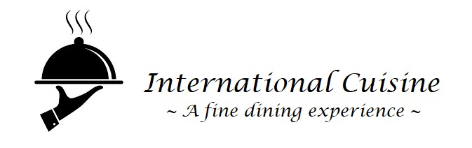

This is a new venture and a proprietary partnership of four entrepreneurs with a passion for food and fine dining. Visit us and taste authentic diverse dishes made from traditional recipes passed on from generation to generation. All our ingredients are locally sources from organic farmers markets, grass fed beef, and free range chicken. Our partnership thrives on sustainable food sources.
Owner/Mex-American Specialty Chef - Graduate from San Jose State University in 2019. Enjoys nature walks, outdoor activities, art and wine festivals, and spending time with her family. She brings Latin specialty dishes bursting with flavors.

Owner/African Specialty Chef - Graduate from San Jose State University in 2019. This former grille chef loves infusing his Ghanaian heritage into his food taking all the best qualities of west african fine dining.
Owner/Middle Eastern Specialty Chef Graduated from San Jose State University in 2019. Enjoys cooking traditional recipes and trying new recipes in her kitchen - the heart of the home - and spending time with family.
Owner/Business Manager Graduated from San Jose State University in 2019. Enjoys cooking and creating new businesses. He always had a passion for creating new restaurants that is unique and refreshing.